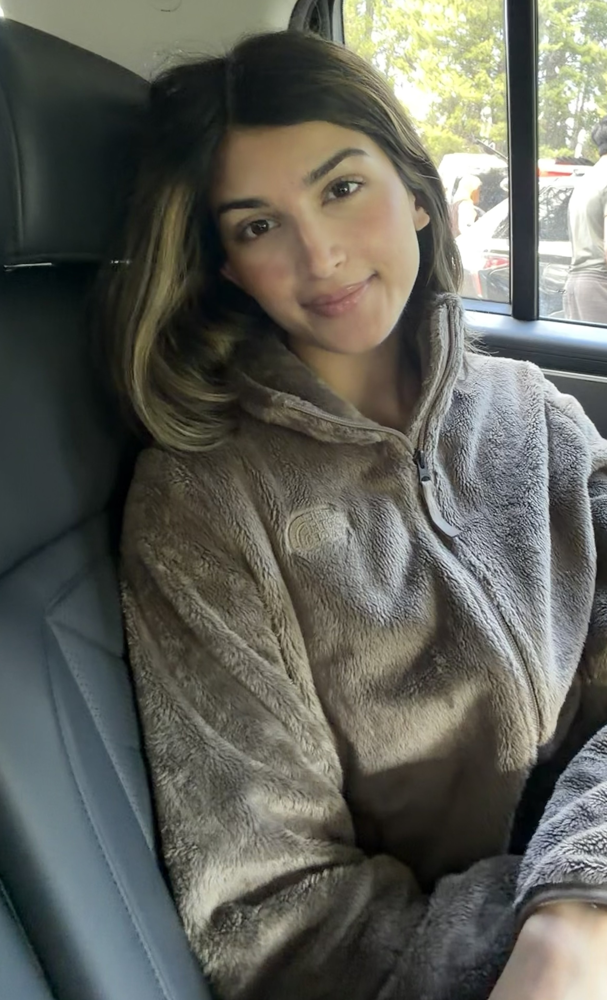
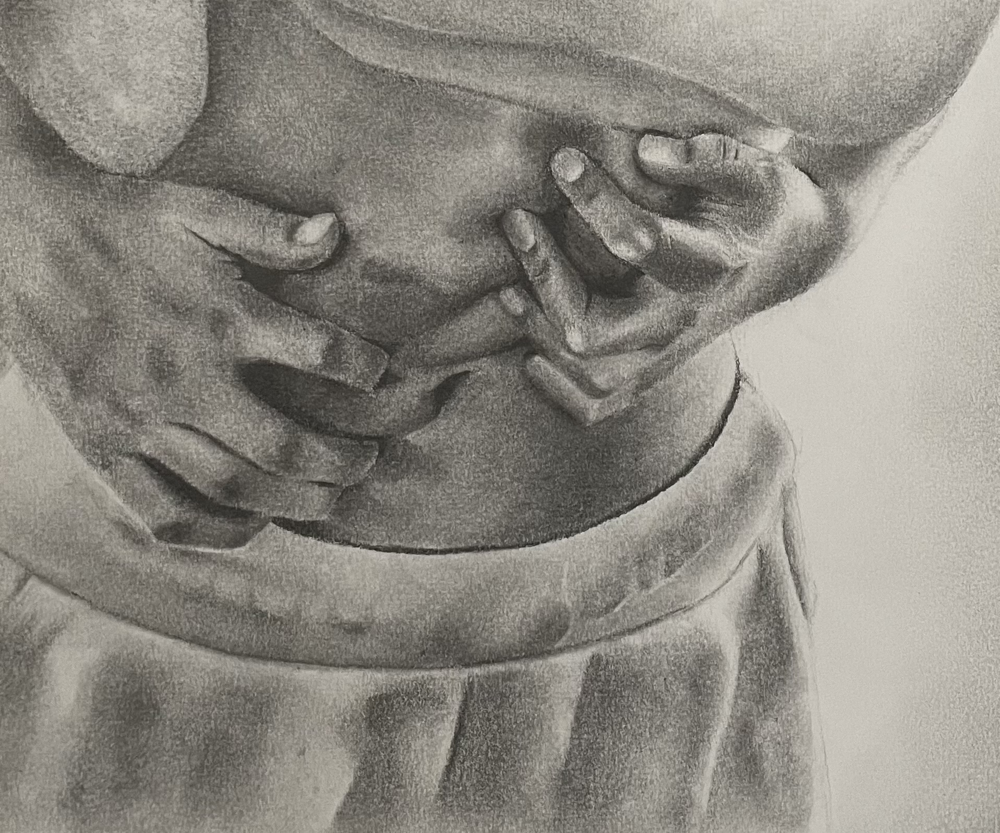
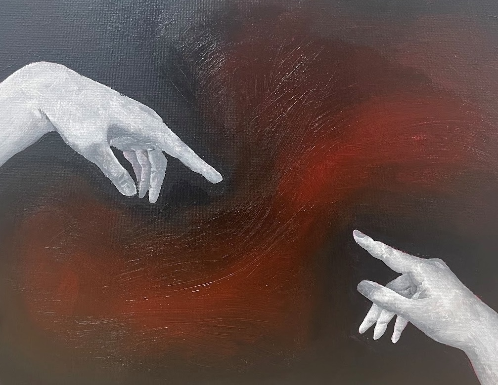
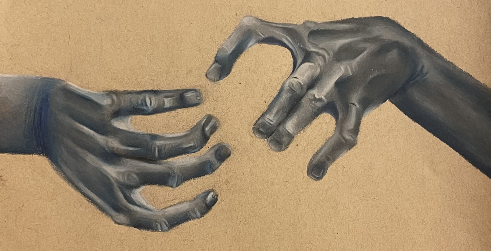
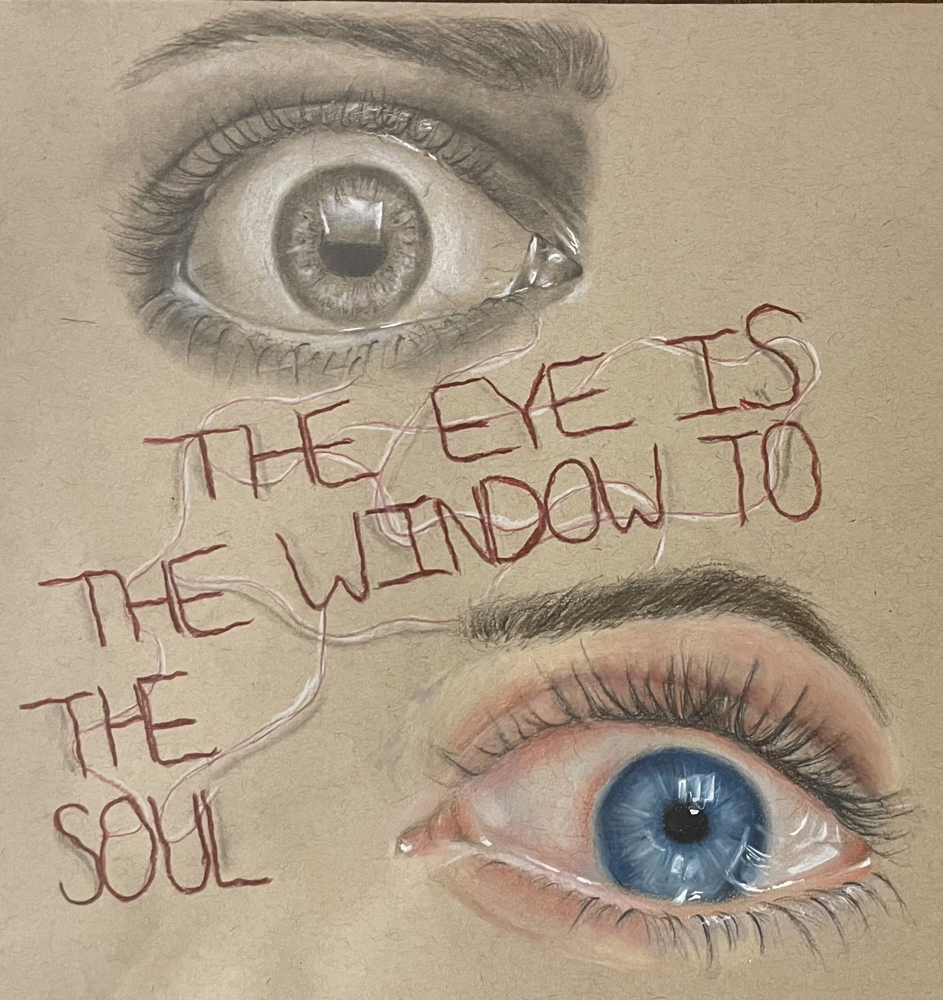

Sketchbooks before wireframes, learning to communicate what can't be said directly. That's still the question I'm asking, just in Figma now.
I'm currently a product design intern at Oxy and a UI/UX Designer Aide at ASU's Learning Engineering Institute, designing AI-powered tools for student learning outcomes.
Studying Media Arts and Sciences at Barrett Honors College, graduating May 2027.

Traditional art shaped how I see the world. This series from my AP Studio Art portfolio explored mental health through portraiture, symbolism, and body language. Developed during my time as President of the Awareness Committee at the Teen Mental Health Initiative, each piece asked the same question: how do you make invisible experiences visible?
It's the same question I bring to design.



